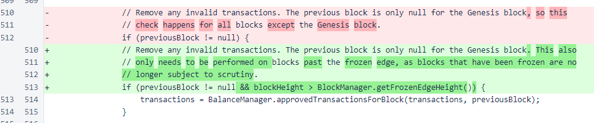

Nyzo version 489 (commit on GitHub) reduces the computational demands of the verifier and sentinel.
This version affects both the verifier and the sentinel.
Version 488 added some undesirable computational overhead. This version reduces the additional computational load of version 488 to a negligible level.
In 488, an additional filtering of transactions was added in the balance list derivation process. This update limits the application of that additional filter to blocks beyond the frozen edge. The undesirable computational overhead of 488 was due to the repeated application of this filtering on older blocks. Such filtering of blocks behind the frozen edge was unnecessary, as a block cannot be frozen without passing through this filtering at least once.
